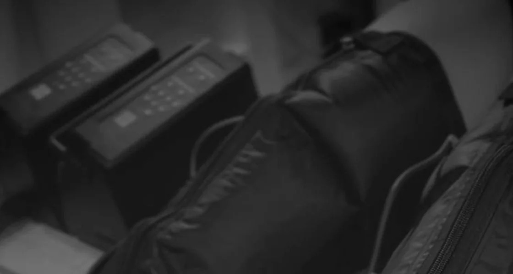

01 / ПРЕССОТЕРАПИЯРИТМИЧНАЯ КОМПРЕССИЯ
Прессотерапия
Мягкая аппаратная процедура: специальные манжеты последовательно наполняются воздухом, создавая волнообразное давление. Помогает ощутить лёгкость в ногах и расслабиться; иногда применяется для уменьшения отёчности по показаниям.
Комфортный ритмОщущение лёгкости
Стоимость — по запросу